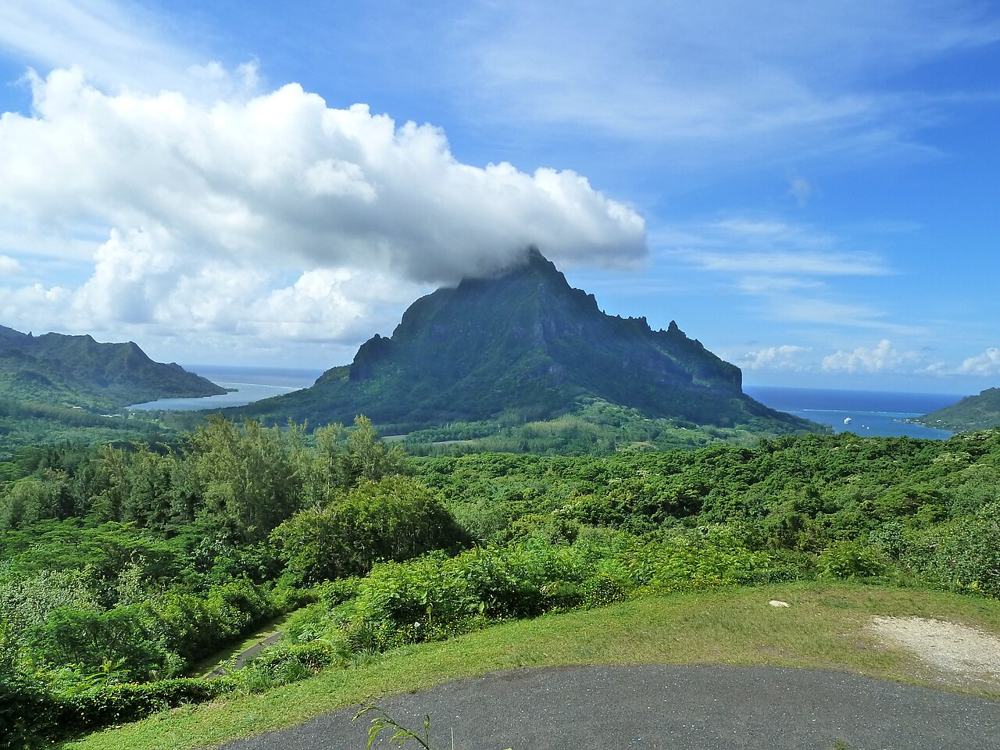

Moorea in a Port Day: The Lagoon, the Bays, and the Beach

Moorea is the island Tahiti's postcards are secretly jealous of — a jagged green crown wrapped in a lagoon so blue it looks colour-corrected. It is also a port with no port: no dock, no terminal building, no town to walk into. The whole day is a boat ride, a lagoon, and a mountain view — and the people who enjoy it most booked the lagoon before they sailed.
Arriving: anchor and tender
Moorea has no deep-water cruise pier, so every ship anchors offshore and tenders passengers in. Most ships anchor in one of the two deep bays on the north coast — Opunohu Bay or Cook's Bay — and run tenders to a small jetty: from Opunohu Bay to the concrete pier at Papetoai village, a five- to seven-minute ride, or in Cook's Bay to the wooden pontoon at Paopao, about two minutes. Some ships anchor off Vaiare, where the island's ferry quay sits. The two bays are far enough apart to change every pickup time and road direction, so confirm the landing with your cruise line before booking an independent tour or a driver. On big ships the tender queue is the first hour of the day, and the last tender back is a hard deadline. Most calls run roughly eight to ten hours at anchor — enough for one tour plus beach time.
The lagoon: the one thing not to miss
For most people, the lagoon is the day. The classic Moorea boat tour runs about four hours: the shallow sandbar off Tiahura where stingrays gather and blacktip reef sharks cruise past, the underwater tikis off Papetoai, and a drift snorkel over a coral garden. A shared half-day tour runs roughly 9,000–13,000 XPF (about $80–115) per person, gear included, and the good operators sell out on cruise days — book weeks ahead, not on the gangway. Choose an operator that keeps the group small and never guarantees the animals: wild rays and sharks should never be touched or chased. Bring reef-safe sunscreen and your own mask if you have one you trust, and never stand on the reef.
The land side: the Belvedere and the ring road
The other half of Moorea is the view from above. The Belvedere lookout, high in the Opunohu Valley, looks down on both bays at once with Mount Rotui rising between them — it is the one photo everyone takes and nobody regrets. A guided 4x4 safari covers the Belvedere, the Opunohu marae and the pineapple fields in a morning, from roughly 8,000 XPF (about $70) per person. Or drive it yourself: a single 60-kilometre road loops the whole island in two to three hours with stops, and a rental car runs roughly $70–80 a day from the desks at the Vaiare ferry quay or the airport at Temae — book ahead for weekends, and read the insurance excess before you sign, since it can run over $1,000. If you want a beach rather than a tour, Temae Beach on the northeast coast is the main public white-sand beach, and Ta'ahiamanu public beach sits at the mouth of Opunohu Bay. Moorea has no cruise-oriented beach clubs — the resort beaches are generally for guests, though day passes are sometimes available if you ask ahead — so a beach day here means a public beach and a picnic, not a lounger with service.
Coming from Tahiti: the ferry option
Many visitors reach Moorea by ferry from Papeete rather than by ship — worth knowing if you are adding days in Tahiti before or after the cruise. Three companies share the crossing to Vaiare: Aremiti, Vaeara'i and Tauati Ferry, with the fast boats taking 30 to 45 minutes and fares of roughly $10–22 one way. One name to ignore: Terevau, which older guides still list, was liquidated in April 2026 and no longer sails. Foot passengers can usually buy on the day; with a car, book ahead.
What a port day costs (approximate, per person)
- Half-day lagoon tour (rays, sharks, coral garden): roughly 9,000–13,000 XPF
- 4x4 safari to the Belvedere: roughly 8,000 XPF
- Rental car for the day (split two ways): roughly 4,000–4,500 XPF each
- Lunch at a beach snack or roulotte: roughly 1,500–2,500 XPF
- Temae Beach, Ta'ahiamanu Beach, the bays from the road: free
- Comfortable total with the lagoon tour: roughly 12,000–18,000 XPF
Tips for cruisers
- Book the lagoon before you sail. The good boats sell out on cruise days.
- Confirm the tender landing first. Opunohu Bay, Cook's Bay and Vaiare are far enough apart to change every pickup — do not book a tour until you know where you land.
- Carry XPF cash. Resorts and larger restaurants take cards, but the small snack stands, markets and taxis are cash-only.
- One tour, not two. A lagoon morning plus a Belvedere drive is a full day — a second boat trip leaves no margin for the last tender.
Prices and hours are approximate and were checked in November 2026; lagoon tour prices vary by operator and season, and tender landings change with the ship and the weather. Confirm on the day if a price decides the plan.